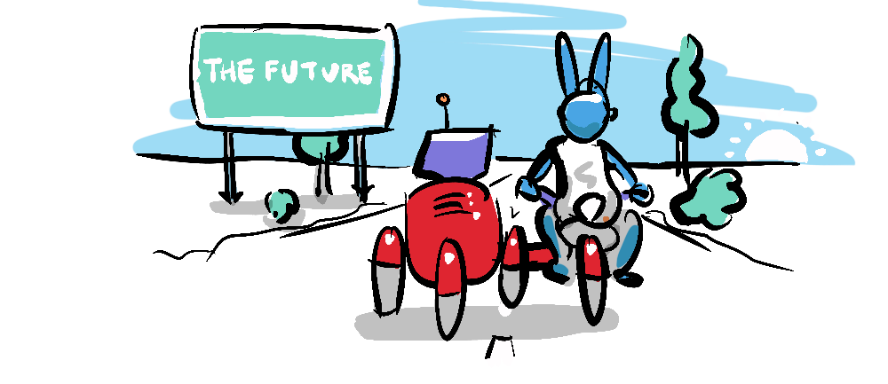

The other day the post below caught my attention. In its characteristic bad-grammar-ambiguous-origin-meme style, Neo's sentiment is one I share.
As an artist of sorts (it's the only thing I'm actually qualified for) I see art as more about transformation than creation. I find we (and yes, I include myself) tend to mythologise art, attributing to it an undeserved magical or spiritual significance, rather than recognising it as basic graft.
In a way, art is creative plagiarism*; when creating an artwork, I can only combine my own experience with my understanding of what art is, which is an amalgamation of the art I have consumed. I literally have no other material to draw on. In fact, it turns out that too much originality in art can actually be counter-productive, as Derek Thompson in his fabulous TED Talk The four-letter code to selling anything states:
"To sell something surprising, you have to make it familiar."
Software like Stable Diffusion and Midjourney took people by surprise because we imagined art and creativity as something magical, an echo of the human spirit, irreducible and therefore something AI would have trouble replicating. As late as 2020 in "Unlocking the Universe", Beth West wrote this about 'Cities of the Future'†
"... lots of things can't be done by machines: creative jobs such as writing books and creating art... These areas will continue to need people..."
We are all now aware that visual art in particular has turned out to be one of the lowest hanging fruits of all, and regarding writing... it seems that the writing may be on the wall (that was my own pun by the way, chat GPT isn't the only author who will resort to the lowest form of wit, given the right conditions).

My admittedly cynical view of art is informed by experiences at art school and in the gallery scene, where I've had some small opportunity to glimpse behind the smoke and mirrors used to multiply art's perceived value and shroud it in illusory significance.
Don't get me wrong, creativity is fun, and rewarding, and can be impressive—it is an essential part of life, but it's not magic. Art is work. It's no wonder that AI can replicate and even improve on this process, it's put in the hours (which, for AI, takes seconds). AI has absorbed more material than we can imagine (in part because our imagination is limited by what we have absorbed!).
Creativity is about connection. The reason we like to consume art is because it makes us feel connected to an artist, and, by proxy, humanity. Whether it's an actor playing a part, a musical compositon or an author's words, an artwork is a telescope that let's us see someone else's island of internal experience. And a good work of art, a work of art that we love, makes us feel seen too. As Zefrank says:
"The things that make us feel most alone have the greatest power to connect us."

We can understand the impact of AI art by analogy with photography in the 19th Century, a technology that threatened the essence and purity of art. Charles Baudelaire, in 1859, went so far as to call photography...
"art's most mortal enemy"
... and yet rather than having "supplanted or corrupted it altogether"‡, photography actually drove a profound reevaluation of art, leading to radical new movements from Impressionism through Cubism, Surrealism, Abstract Expressionism, Pop Art and the other modernist and post-modernist art that furnished the Twentieth Century and beyond (thanks BFA).
Not only did photography broaden the scope of art-making beyond mere representation, but it eventually influenced representational art in the form of photo-realist painting. Artists like Chuck Close, actively subverted the photographic medium, by replicating it!
Photorealists produced art that seemed eeriely more realistic than the perfection of a photo, and made audiences gape in wonder at another human being's talent and toil. We rediscovered that art is about connection.

Another example of disruptive technology enhancing a field rather than destroying it, is the popularity of chess. From the time Deep Blue beat Kasparov in 1996, chess popularity has accelerated. It turns out we thrive on challenge.
The world is already beginning to lose the romance of our first brush (I promise, I'm not usually like this) with AI art—as it becomes increasingly ubiquitous, we are no longer swooning. That which can be produced cheaply is soon taken for granted. This is evident in comments I've recieved about this site, like this comment from reeeeee at Hacker News:
"It's nice to see something that stands out between all the copy-and-paste AI slop"
... or this from ultrasounder:
"Wow! [I haven’t seen] such an original piece of "non-AI slop" content in a long time."
The handdrawn evidence of a human (me) in the loop, here at the site, already signals that effort and unique human thought has gone into making it, and this apparently resonates with people. I had hoped it would. And while I think AI art will be as impactful as photography continues to be, it won't devalue a Chuck Close or a Banksy, it may even turn out to highlight what's special about them. This is why I'm keeping my crappy drawings.

The joy of creativity, whether it's painting, photography, or playing chess is the joy of connection with another sentient being. If we know there's no experience there, no toil, no message then the level of attention viewers pay to the work will diminish accordingly. As crappy as they are, my drawings are unique to me, and if they resonate with you, then they connect us. This is what I hope to achieve in my writing and art and I will continue to do so with the cutest animals I can muster.

At the same time regarding AI, I think (at a stretch) we might be able to appreciate the beauty of connecting with humanity as a whole, knowing that it is the big data of humanity that has informed AI art—I suspect this is what we find so magical about it. AI art does say something to us and about us, it reflects us in the same way as a photographic portrait can. When the subject gazes directly into the camera, it creates a connection, bridging the viewer with the human at the other end of the lens. Perhaps AI art might help connect us to humanity, or more profoundly, hold up a mirror...